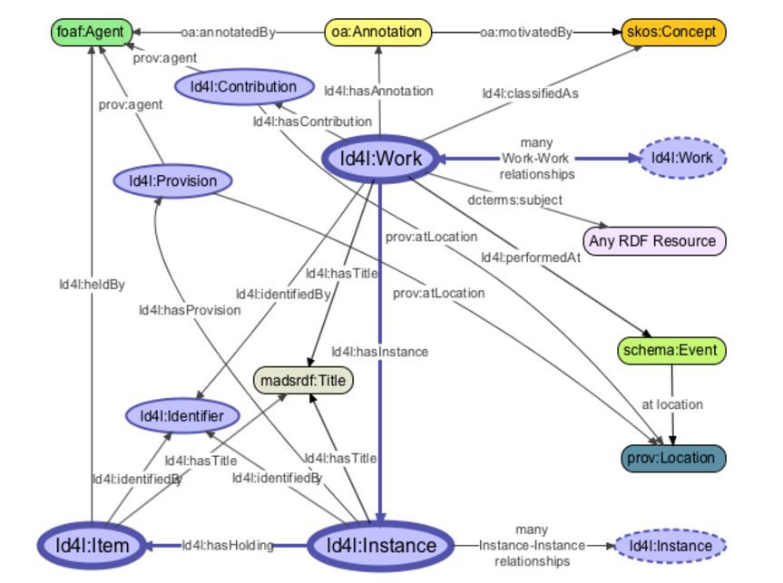

Overview
This bibliographic ontology is based on Rob Sanderson's and LD4L's recommended changes to BIBFRAME to better reflect best practices in the Linked Data domain. It is LD4L’s hope that derivations from BIBFRAME found in this ontology will be folded into the official BIBFRAME namespace. Efforts have been made to consider each class and property, but this ontology is largely untested. LD4L may provide revised/expanded versions in future as we identify new use cases and begin to test the ontology with instance data. The proposed changes include, but are not limited to, incorporation of the following principles and conventions: (1) Reuse stable pre-existing classes and properties from external ontologies rather than declaring new ones within the BIBFRAME namespace. (2) Use URIs rather than strings to identify resources. (3) Replace the bf:Authority classes with Real World Entity classes for people, places, things, etc. (4) Define only one pattern to model one feature of the knowledge domain. (5) Clarify the directionality of properties via naming, definitions, and, where applicable, domain and range constraints, and add inverse properties where appropriate. (6) Name terms consistently and make the distinction between classes, object properties, and datatype properties clear through standard naming conventions. See http://ld4l.org/ontology/ for more on the LD4L Ontology development process.
A high-level schematic representation of the proposed LD4L ontology is shown below, with detailed discussion following.
Ontology Modules
Ontology modules list consists of the ontology modules that are extracted from the external upstream ontologies (such as FOAF, SKOS, DC Terms, VIVO-CORE etc.).
{{ontology.ontologyName}}
| Ontology Name | {{ontology.ontologyName}} ({{ontology.code}}) |
| Namespace | {{ontology.namespace}} |